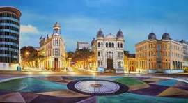
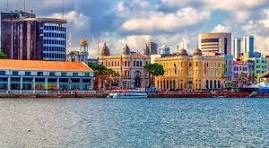

Marco Zero - Recife
Sobre o Marco Zero
O Marco Zero é um dos pontos turísticos mais emblemáticos de Recife, localizado no Bairro do Recife Antigo. É conhecido como o centro histórico da cidade.
Imagens

Contato
Para mais informações, entre em contato:
Email: teste@example.com